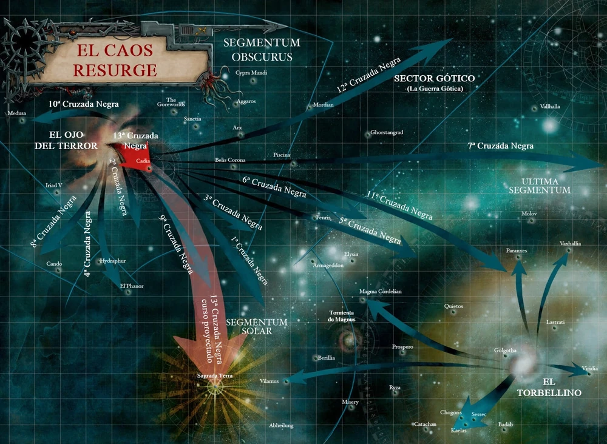
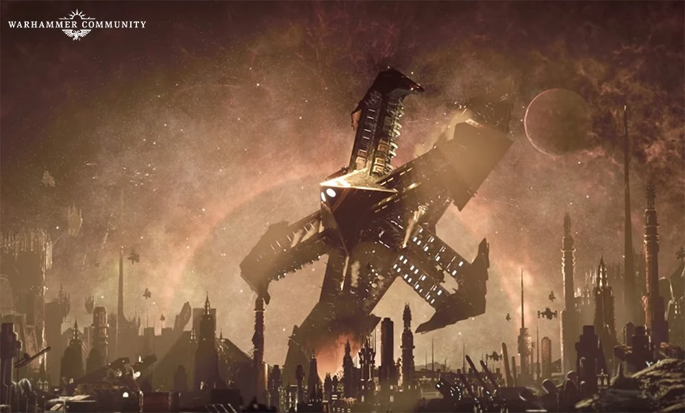

Las Cruzadas Negras en Warhammer 40k
Las Cruzadas Negras son campañas militares de escala galáctica lanzadas por las fuerzas del Caos bajo el mando de Abaddon el Saqueador, líder de la Legión Negra. Estas cruzadas representan uno de los mayores peligros para el Imperio del Hombre en el sombrío milenio 41. Su objetivo no solo es conquistar mundos, sino sembrar caos, corrupción y destrucción a gran escala.
.
Orígenes de las Cruzadas Negras
Tras la derrota de Horus en la Herejía de Horus, las legiones traidoras se retiraron al Ojo del Terror, un reino caótico donde la realidad y el tiempo se distorsionan. Durante siglos, estas legiones permanecieron divididas y enfrentadas entre sí.
Ezekyle Abaddon, antiguo primer capitán de los Hijos de Horus, logró unir a los restos de estas fuerzas bajo la Legión Negra. Rechazó venerar ciegamente a los Dioses Oscuros y asumió el liderazgo absoluto, iniciando las Cruzadas Negras para vengar a Horus y debilitar al Imperio del Hombre.
Características de las Cruzadas Negras
Las Cruzadas Negras movilizan recursos colosales: Marines del Caos, cultistas herejes, piratas renegados, demonios y titanes corrompidos. Cada cruzada tiene objetivos distintos: destruir mundos, obtener artefactos antiguos o abrir grietas en la disformidad. Aun cuando no conquistan, dejan muerte, corrupción y desestabilización.
Principales Cruzadas Negras
Se reconocen trece grandes Cruzadas Negras, entre las más importantes:
- Primeras Cruzadas (1ª a 9ª): Consolidación del poder de Abaddon, saqueo de mundos imperiales y adquisición de reliquias del Caos.
- Décima Cruzada Negra (Guerra Gótica): Ataque al Sector Gótico para obtener armas antiguas y corromper sistemas estratégicos.
- Duodécima Cruzada Negra: Inestabilización de múltiples sistemas y apertura de nuevas cicatrices en la disformidad.
- Decimotercera Cruzada Negra y la Caída de Cadia: La ofensiva más devastadora, dirigida contra el mundo fortaleza de Cadia y que provocó la apertura de la Cicatrix Maledictum, dividiendo la galaxia en dos.
La Caída de Cadia
Cadia era un mundo fortaleza clave, conocido por sus soldados disciplinados y su importancia estratégica: mantenía cerrada la entrada al Ojo del Terror. Durante milenios resistió invasiones del Caos, hasta que la Decimotercera Cruzada Negra lo destruyó.
Abaddon utilizó los Crones del Caos y hordas demoníacas para debilitar el planeta, culminando en su destrucción total. Esto eliminó un bastión defensivo y abrió la Gran Fisura, aislando mundos enteros y debilitando al Imperio.
Importancia: Derrumbe estratégico, desmoralización de la Guardia Imperial y Astartes, inicio de una nueva era de caos y vulnerabilidad galáctica.
Impacto de las Cruzadas Negras
Las Cruzadas Negras simbolizan la implacable amenaza del Caos. Cada ofensiva deja cicatrices permanentes en el Imperio: mundos destruidos, millones de muertos y avance de la corrupción. La destrucción de Cadia demostró que ni la disciplina ni la estrategia pueden contener plenamente a Abaddon. La galaxia quedó más fragmentada y vulnerable que nunca, y la humanidad continúa luchando en un conflicto interminable y desesperado.
Conclusión
Las Cruzadas Negras son recordatorios de la fragilidad del Imperio. Desde las primeras hasta la decimotercera cruzada, cada ofensiva ha dejado cicatrices profundas en la galaxia. La Caída de Cadia cambió para siempre el equilibrio de poder, demostrando que el Caos nunca puede ser derrotado, solo contenido. En el sombrío milenio 41, la guerra contra Abaddon continúa, y la humanidad sigue atrapada en un ciclo interminable de violencia y destrucción.
.
.
.
.
.
.
.
.
